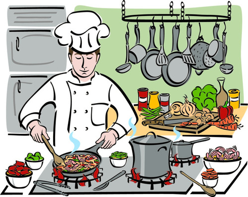
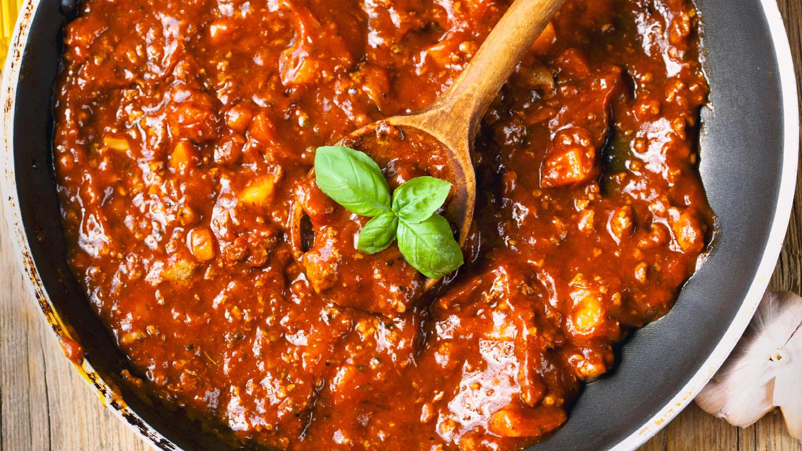
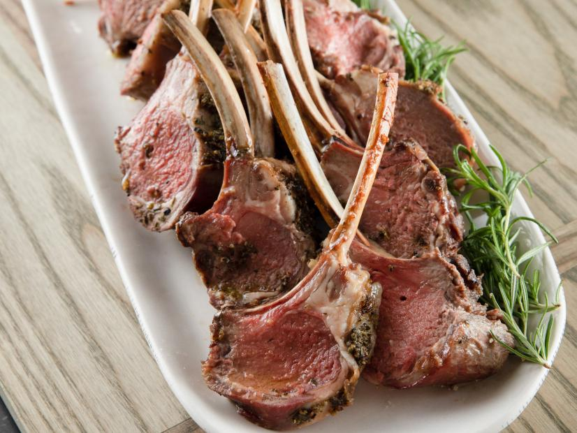
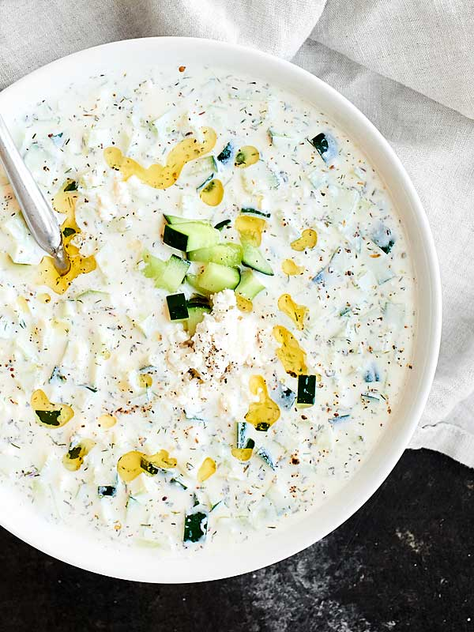

Everyday Cooking Recipes

Everyday Food has developed recipes with the home cook in mind. These delicious dishes call for simple ingredients that you already have in your pantry or can easily find at local grocery stores and farmers' markets.
Bolognese Lasagna

Ingredients
Pasta
- 1 ¾ cup flour
- pinch salt
- 3 eggs
Bolognese Sauce
- 3 Tbsp olive oil.
- 2 onions, finely chopped.
- 1 ½ lb(s) lean ground beef.
- 1 small Italian spicy sausage, casing removed.
- 2 cloves garlic, chopped.
- 2 small carrots, finely diced.
- Several sprigs fresh thyme.
- 2 bay leaves.
- 2 tsp dried oregano.
- 1 28 oz can plum tomatoes with juice, chopped.
- coarse salt and freshly cracked black pepper.
- 1 bunch fresh basil, washed, stemmed, and chopped.
Bechamel Sauce
- ⅓ cup butter.
- ⅓ cup plus 1 tbsp flour.
- 4 cup milk.
- pinch freshly grated nutmeg.
- coarse salt and freshly cracked black pepper.
- 2 Tbsp Pecorino Romano cheese.
- 2 Tbsp Parmesan cheese.
Assembly
- oil, for baking dish.
- ⅓ cup freshly grated Parmesan.
- coarse salt and freshly cracked black pepper.
Directions
Pasta
- In a stand mixer fitted with the dough hook attachment add flour and salt to the mixing bowl.
- With mixer on low speed, add 1 egg at a time until incorporated.
- Continue to mix for 3 to 4 minutes until the dough starts to come together.
- Remove dough from mixer and knead to form a ball.
- Cover and let rest for 1 hour
- Roll out pasta.
- Cut dough into 12 pieces.
- Roll dough into thick sheets on the pasta machine, starting at the thickest setting, reducing pasta setting one mark each time you roll the dough through.
- Cook pasta in boiling salted water for about 4 minutes or until just al dente.
- Transfer to bowl with cold water to prevent sticking.
- Drain on towel.
Bolognese Sauce

- In a large skillet, heat the olive oil on medium.
- Add the onion and saute 3 to 4 minutes or until soft.
- Add the beef and Italian sausage and cook for 5 to 7 minutes or until browned.
- Add the garlic and carrots and saute for 3 minutes just to soften.
- Add the thyme sprigs, bay leaves, oregano, tomatoes and salt and pepper and bring to boil.
- Reduce heat to low and simmer, covered, for 55 to 60 minutes or until sauce is thickened and flavour has developed to your liking.
- Add the fresh basil and adjust seasoning.
Bechamel Sauce
- In a medium saucepan on medium heat, melt butter.
- Add the flour and stir with wooden spoon until a paste forms.
- Remove from heat and add the cold milk a little at a time while stirring well between each addition.
- Return to heat once all the milk is added and mixture is smooth.
- Continue stirring over medium heat until sauce comes to a boil and thickens, about 5 minutes.
- Add a pinch of nutmeg and season with salt and pepper to taste.
- Add the Pecorino and Parmesan cheese and stir.
Assembly
- Preheat oven to 350 degrees F.
- Oil the bottom of a 13- by 9- by 2-inch baking dish.
- Reserve a quarter of the bechamel sauce for the top layer.
- Layer lasagna as desired starting with pasta and alternating bolognese sauce, grated cheese and bechamel.
- Season well between each layer.
- Finish with a layer pasta, the reserved bechamel sauce and extra cheese on the top layer to finish (you should have 6 layers of lasagna)
- Bake lasagna in middle of oven for about 35 to 40 minutes or until golden.
Rosemary Rack of Land with Easy Tzatziki

Ingredients
- 1 ½ Tbsp chopped fresh rosemary leaves.
- 1 ½ Tbsp chopped garlic (4 cloves).
- 1 Tbsp dried oregano.
- Kosher salt and freshly ground black pepper.
- 2 Tbsp good olive oil.
- 2 racks of lamb (14 to 16 oz each), frenched.
- Easy Tzatziki (recipe follows).
Easy Tzatziki.

- 1 hothouse cucumber, unpeeled and seeded.
- 2 (7-oz) containers Greek yogurt, such as Fage Total.
- ¼ cup sour cream.
- 2 Tbsp freshly squeezed lemon juice.
- 1 Tbsp white wine vinegar.
- 1 Tbsp minced fresh dill.
- 1 ½ tsp minced garlic (2 cloves).
- Kosher salt and freshly ground black pepper.
Directions
- Place the rosemary, garlic, oregano, 1 tablespoon salt, and 1 1/2 teaspoons pepper in a food processor and process until minced. Add the olive oil and process into a coarse paste.
Place the lamb on a sheet pan with the rib ends pointing down and spread the paste evenly on top of both racks. Cover and refrigerate for at least 6 hours.
- When ready to cook, preheat the oven to 450ºF.
- Roast the lamb for 25 minutes exactly for medium rare and 30 minutes for medium. Remove from the oven and cover the pan tightly with aluminum foil.
Allow the lamb to rest for 15 minutes. The internal temperature should read about 140º when an instant-read thermometer is inserted sideways into the center of the lamb.
Slice between the ribs into individual chops and serve hot or warm with Easy Tzatziki.
Easy Tzatziki
1. Grate the cucumber by hand on a box grater, as you would grate carrots.
Squeeze the cucumber with your hands to remove a lot (but not all) of the liquid.
Place in a medium bowl and stir in the yogurt, sour cream, lemon juice, vinegar, dill, garlic, 2 teaspoons salt, and 1/2 teaspoon pepper.
Serve cold or at room temperature.
The entire information of this page has been lifted from Food Network's page on Everyday Cooking.
Return to the top of the page.